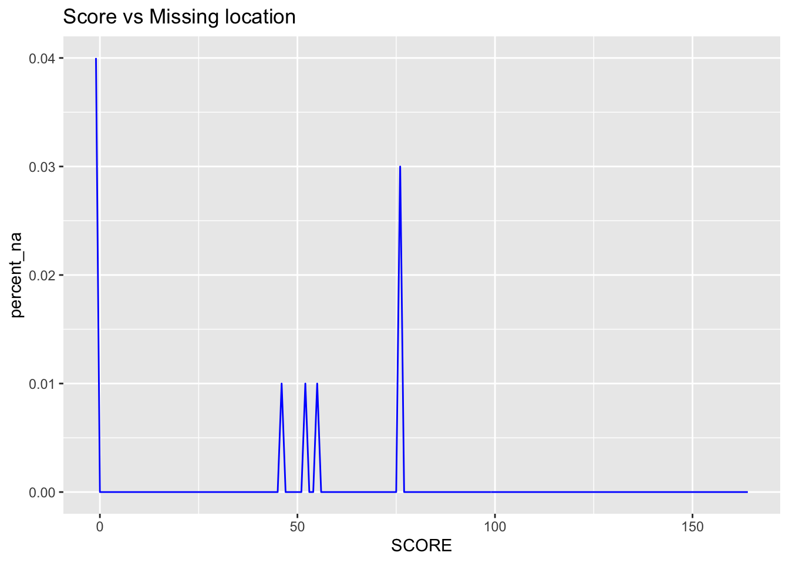

Chapter 4 Missing values

From the graph above, we can tell that:
The “score” values are missing for the last several restaurants in the dataset
The missing values of some certain variables have the same pattern for the first half of the dataset and the second half of the dataset, which is quite unusaul generally. It might be that the dataset is arranged by the author on purpose to have such pattern.
When the latitude and longitude are both missing, the following four variables are missing too, which makes sense since these vaiables all require the location information. For example, the “community board” values can be known only when the location is known.
Although there are some missing values in the dataset, we don’t have to worry too much since the percentage of obsevations with missing values is pretty low. We can drop the obsevatins with missing values if needed without pushing too many effects on the whole dataset.
## # A tibble: 136 x 4
## SCORE num_lat num_na percent_na
## <int> <int> <int> <dbl>
## 1 -1 119 5 0.04
## 2 0 1697 5 0
## 3 2 4895 17 0
## 4 3 2238 3 0
## 5 4 4544 10 0
## 6 5 6141 10 0
## 7 6 3137 5 0
## 8 7 14618 23 0
## 9 8 7396 9 0
## 10 9 19032 16 0
## # … with 126 more rows